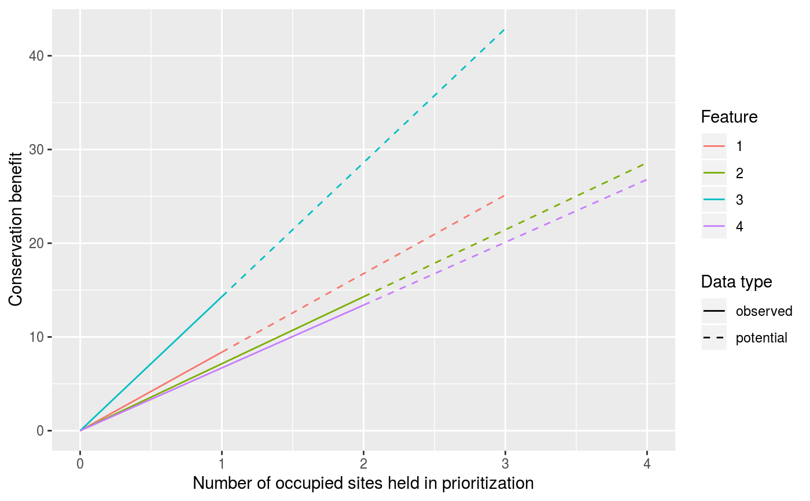

Create a plot showing the relative conservation benefit for different conservation features.
plot_conservation_benefit( site_data, feature_data, site_occupancy_columns, feature_preweight_column, feature_postweight_column, feature_target_column, plot_data = TRUE )
| site_data |
|
|---|---|
| feature_data |
|
| site_occupancy_columns |
|
| feature_preweight_column |
|
| feature_postweight_column |
|
| feature_target_column |
|
| plot_data |
|
ggplot plot object.
This function creates a plot to visualize the conservation benefit for each feature. The x-axis shows the number of protected sites that are occupied by a given feature, and the y-axis represents the amount of conservation benefit with that number of protected sites. Lines correspond to features. Each feature will have a line that is comprised of a solid component and a dashed component. The solid component of the line corresponds to the range of conservation benefit values based on recorded presences and absences in the site data. The dashed component of the line corresponds to the additional conservation benefit values that could be obtained if additional surveys were conducted and the feature was detected in all sites that are currently unsurveyed. Features that are associated with greater conservation benefit values (greater y-axis values) at lower numbers of protected sites (smaller x-axis values) will, broadly speaking, be considered more important for protection.
# set seeds for reproducibility library(RandomFields) set.seed(123) RFoptions(seed = 123) # simulate data site_data <- simulate_site_data(n_sites = 5, n_features = 4, prop = 0.5)#> ...feature_data <- simulate_feature_data(n_features = 4, prop = 0.5) # preview simulated data print(site_data)#> Simple feature collection with 5 features and 13 fields #> geometry type: POINT #> dimension: XY #> bbox: xmin: 0.2875775 ymin: 0.0455565 xmax: 0.9404673 ymax: 0.892419 #> epsg (SRID): NA #> proj4string: NA #> # A tibble: 5 x 14 #> survey_cost management_cost e1 e2 e3 f1 f2 f3 f4 #> <dbl> <dbl> <dbl> <dbl> <dbl> <dbl> <dbl> <dbl> <dbl> #> 1 8.13 73.9 -0.365 0.642 1.08 1 0 0 1 #> 2 6.07 69.7 -0.303 -0.382 -0.838 0 1 0 0 #> 3 3.74 62.0 1.77 1.42 1.11 NA NA NA NA #> 4 6.82 71.8 -0.404 -0.771 -0.732 NA NA NA NA #> 5 5.22 70.7 -0.697 -0.910 -0.614 0 1 1 1 #> # ... with 5 more variables: p1 <dbl>, p2 <dbl>, p3 <dbl>, p4 <dbl>, #> # geometry <POINT>print(feature_data)#> # A tibble: 4 x 9 #> name survey survey_sensitiv~ survey_specific~ model_sensitivi~ #> <chr> <lgl> <dbl> <dbl> <dbl> #> 1 f1 FALSE 0.952 0.863 0.778 #> 2 f2 TRUE 0.956 0.887 0.734 #> 3 f3 FALSE 0.963 0.802 0.725 #> 4 f4 TRUE 0.987 0.849 0.727 #> # ... with 4 more variables: model_specificity <dbl>, preweight <dbl>, #> # postweight <dbl>, target <dbl># plot conservation benefit for each feature plot_conservation_benefit( site_data = site_data, feature_data = feature_data, site_occupancy_columns = paste0("f", seq_len(4)), feature_preweight_column = "preweight", feature_postweight_column = "postweight", feature_target_column = "target")